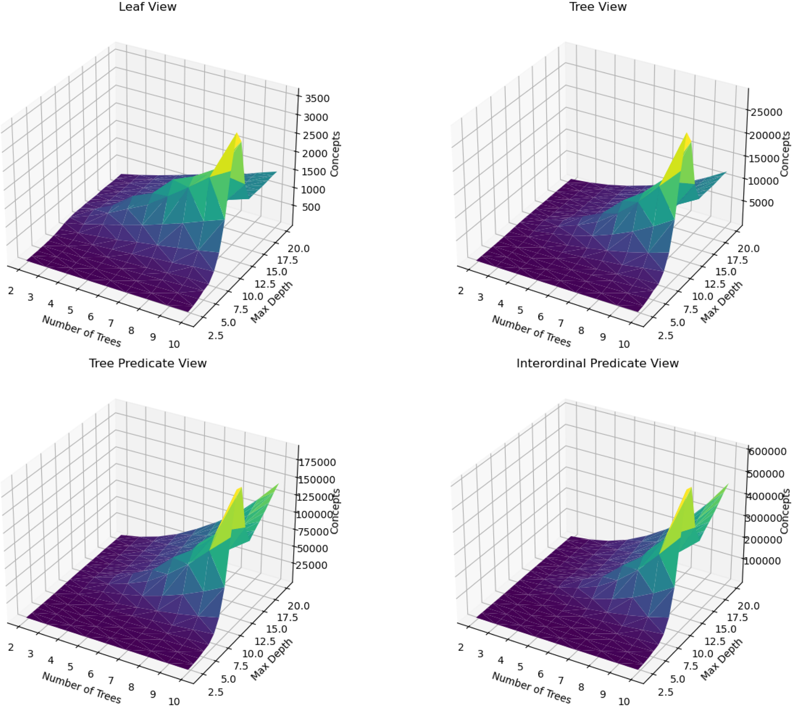
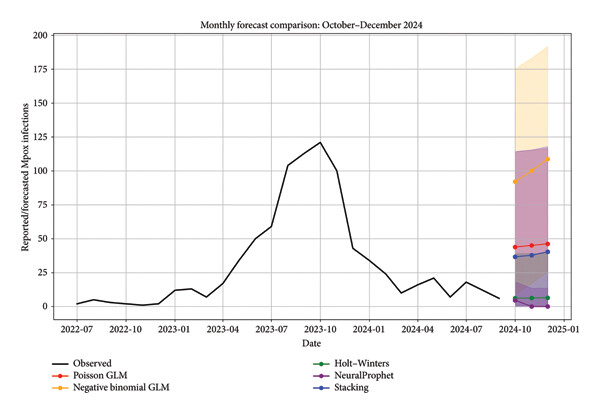

Mathematical modelling
Build and simulate a simple disease or ecological population model; investigate sensitivity to assumptions and parameter choices.
Mathematical modelling, explainable artificial intelligence, and data-driven methods for health, ecological, and environmental decision-making.
My research connects applied mathematics, mathematical epidemiology, ecology, data science, and interpretable artificial intelligence. I study how biological and environmental systems change over time, how reliable predictions can be made from real data, and how those predictions can support responsible decisions.
My methodological interests include ordinary differential equations, discrete-time and stage-structured models, statistical learning, Formal Concept Analysis (FCA), numerical simulation, forecasting, uncertainty analysis, and mathematical optimization. Current work and longer-term research directions are distinguished below.
I develop and analyze mathematical models of infectious-disease dynamics, including compartmental ordinary differential equation and discrete-time systems, transmission thresholds, numerical experiments, and climate-sensitive disease processes.
Applications and prior interests include dengue, hand-foot-and-mouth disease, mpox, and other infectious-disease settings. Future directions include linking mechanistic models to observational data, testing when models remain reliable, and evaluating intervention strategies under uncertainty.

I investigate how environmental variation, harvesting, and biological processes affect populations and ecosystems. My work includes stage-structured ecological models, recruitment and survival processes, climate responses, and long-term population persistence, with Atlantic salmon as a major research application.
An emerging direction is climate-sensitive ecology in Thailand, including fisheries, marine heatwaves, and ecological restoration. Potential projects will be developed only where appropriate population, environmental, and validation data are available.

I study interpretable machine learning, particularly the use of Formal Concept Analysis (FCA) and concept lattices to investigate relationships among data attributes and model predictions. Prior work explores interpretable ensemble-learning approaches, including boosting methods.
A developing research interest is how explanations and predictive relationships change over time: concept drift, evolving data patterns, calibration, and detecting when a model should no longer be trusted without additional validation.

I use statistical methods, time-series analysis, machine learning, and numerical computation to investigate health, agricultural, and environmental data. Applications include disease forecasting, climate-informed risk analysis, and data-derived ecological or social signals.
I am interested in carefully validated hybrid approaches that connect mechanistic equations with data-driven models. Priorities include reproducible code, independent temporal testing, uncertainty assessment, and comparisons with appropriate baseline methods.

I am developing research interests in how mathematical models can help select actions, not only generate predictions. Methods of interest include optimization, network models, intervention evaluation, scenario analysis, and decisions under uncertainty.
Potential applications include public-health resource allocation, accessibility of services during extreme weather, climate-risk responses, and ecological management. These are forward-looking research opportunities—not claims that the problems or methods are entirely new.
I welcome conversations with students interested in mathematical modelling, data analysis, computation, and interdisciplinary research. Prior experience with all the methods below is not required; projects can be scoped to a student's current skills.
Build and simulate a simple disease or ecological population model; investigate sensitivity to assumptions and parameter choices.
Explore an open environmental or public-health dataset, compare interpretable baselines, and test results on later data.
Use concept lattices to investigate patterns in a dataset and compare explanations from different learning methods.
Study a small network allocation or accessibility problem and evaluate simple, transparent decision rules.
Useful starting skills: calculus, basic statistics, linear algebra, Python or R, and a willingness to learn. Possible outputs: a reproducible analysis, mathematical model, visualization, or research poster. Project availability depends on feasibility and supervision capacity.